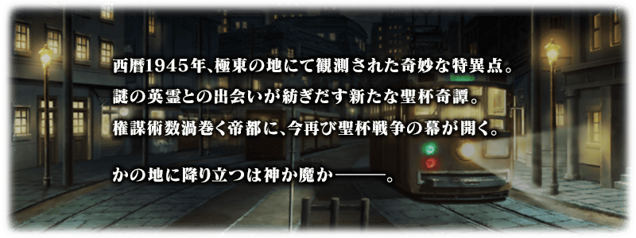
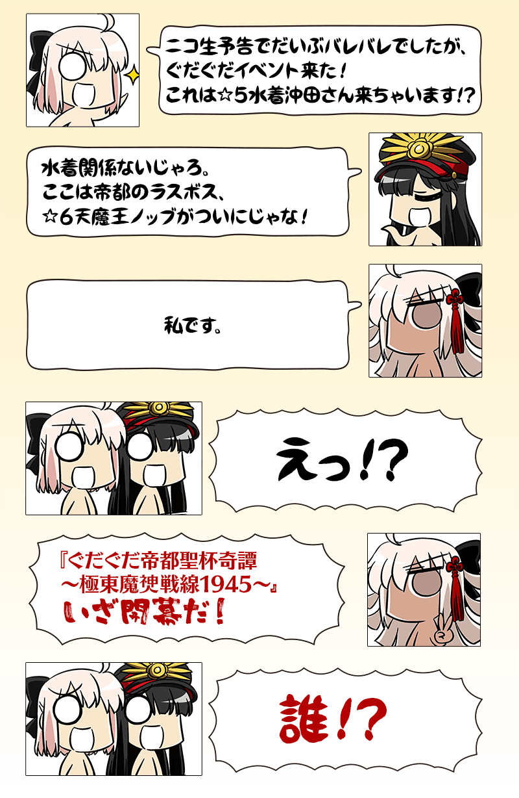
◆活動舉辦期間◆
2018年6月13日(三) 17:00～6月27日(三) 11:59
◆活動概要◆
舉辦期間限定活動「GUDAGUDA帝都聖杯奇譚」！
在帝都舞台掀起的GUDAGUDA活動第3彈物語與「坂本龍馬」一同奔走吧！
在本活動進行主線關卡的話，活動限定Servant「★4(SR)坂本龍馬」將會期間限定加入。
推進主線關卡至後記(エピローグ)，讓「★4(SR)坂本龍馬」正式加入吧！
◆活動參加條件◆
只限「終局特異點」通過的Master才能參加
※不需要通過亞種特異點(從Ⅰ至Ⅳ)及第2部序幕「序」。

在Fate/Grand Order官方網站內首頁及Gallary，公開了期間限定活動「GUDAGUDA帝都聖杯奇譚」的電視廣告。敬請確認。
動畫製作：A-1 Pictures
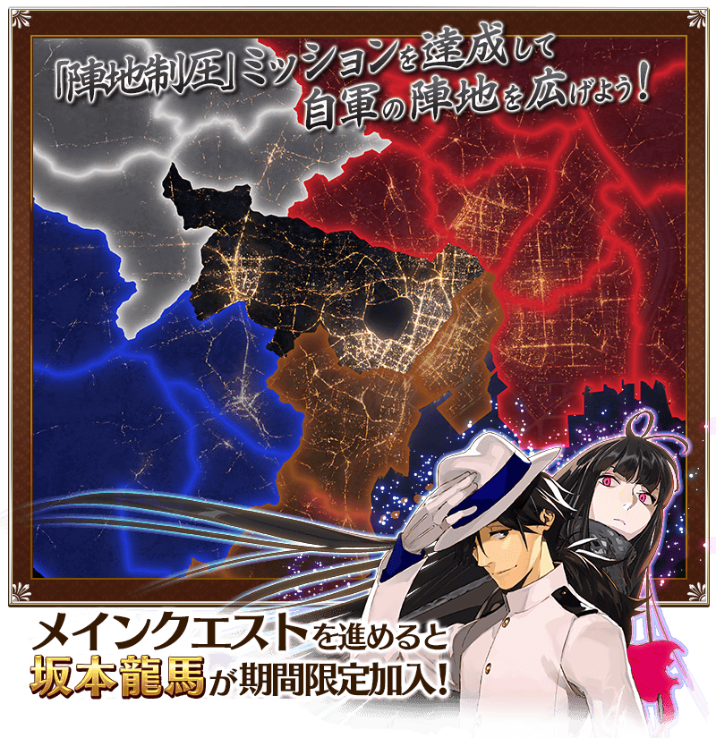
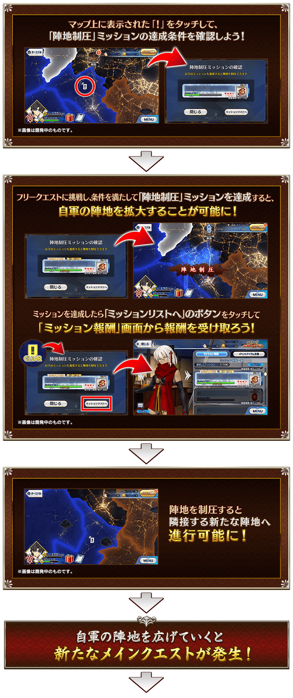

※期間限定Servant「★4(SR)坂本龍馬」在通過日後開放的後記(エピローグ)後正式加入。
請注意於活動開始初期階段開放的主線關卡結束階段尚未正式加入。
| 後記開放時間 |
|---|
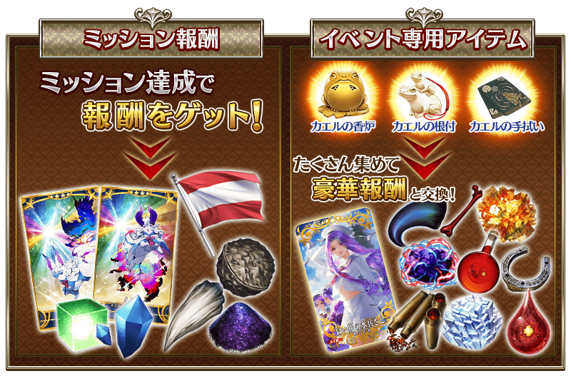

在期間限定活動「GUDAGUDA帝都聖杯奇譚」，會發生達成「收集特定的道具一定數以上」「擊倒特定的敵人」等各式各樣條件的話，可獲得豪華報酬獲得的任務！
另外，對應任務的達成狀況會開放新關卡和任務。
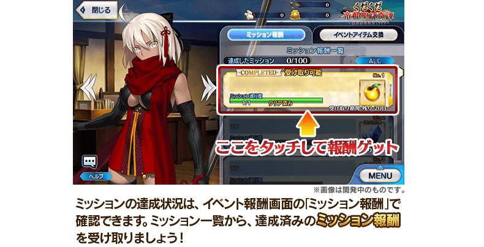
※請注意未通過條件無法入手報酬。
※請注意未領取任務報酬的話，不會開放新的任務和地點開放。
◆超值攻略方法・其1◆
對象Servant在期間限定活動「GUDAGUDA帝都聖杯奇譚」的活動關卡中，自身的攻擊威力會提升！
強化對象Servant，挑戰活動吧！
※各Servant增加量有所差異。
※自6月6日(三) 22:00，在Servant選擇畫面和Servant強化畫面等中，追加「下次活動對象」篩選器。
由於是只顯示於下個舉辦活動活躍Servant的便利功能，敬請活用。
【對象Servant】
| 職階 | 稀有度 | Servant名 |
|---|---|---|
| Saber | ★★★★★ | 沖田總司 |
| Archer | ★★★★ | Emiya |
| ★★★★ | 織田信長 | |
| Lancer | ★★★★ | 李書文 |
| Rider | ★★★★ | 坂本龍馬 |
| ★★★ | 美杜莎 | |
| Caster | ★★★ | 美狄亞 |
| Assassin | ★★★★★ | 謎之女主角Ｘ |
| ★★★ | 岡田以藏 | |
| Berserker | ★★★★★ | 謎之女主角Ｘ〔Alter〕 |
| ★★★★★ | 土方歲三 | |
| ★★★★ | 茶茶 | |
| Alterego | ★★★★★ | 沖田總司〔Alter〕 |
◆超值攻略方法・其2◆
裝備可靠活動道具交換入手的活動限定概念禮裝「白い服の水兵さん」的話，會提升做為任務通過條件對象的敵人追加出現率。
※請注意在各關卡的敵人追加出現率顯示為100％以上的情況，效果仍為100％。
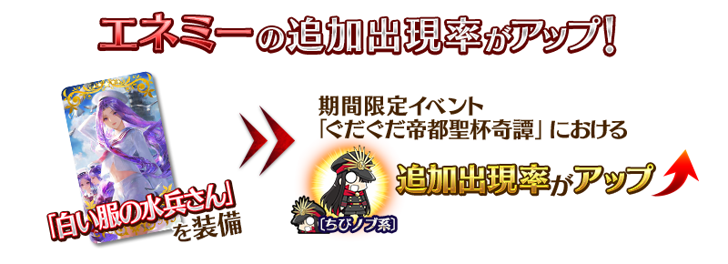
※追加出現率提升的〔迷你信系〕敵人也包含「巨大信」等活動限定的敵人。
◆超值攻略方法・其3◆
裝備在聖晶石召喚Pick Up的期間限定概念禮裝「帝都聖杯戦争」「坂本探偵事務所」「牙研ぐ暗剣」的話，會提升期間限定活動「GUDAGUDA帝都聖杯奇譚」中活動専用道具「青蛙香爐」「青蛙掛墜」「青蛙手帕」的掉落獲得數。
※請注意各關卡的道具掉落率並非100％。
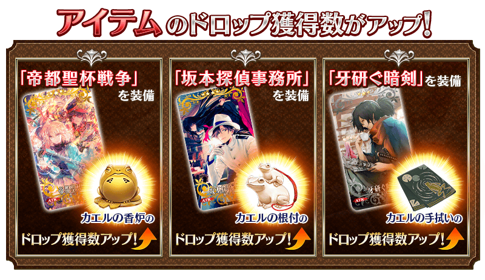
| 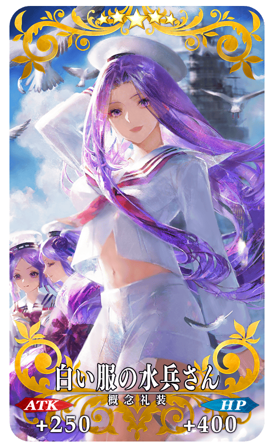 |
★★★★★SSR |
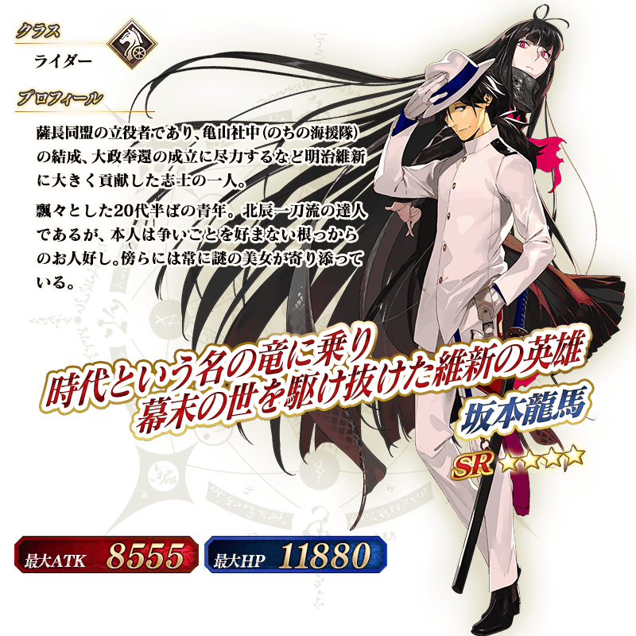
◆靈基再臨◆
使用在活動期間中「任務報酬」外無法入手的「海援隊旗」，重複4次靈基再臨的話，卡面會有所變化！
※坂本龍馬不會隨靈基再臨使戰鬥角色的外觀變化。
◆拿到活動限定概念禮裝經驗值卡「ぐだぐだまじんさん」「ぐだぐだ土佐同盟」吧！◆
做為任務的達成報酬，可大幅強化概念禮裝的EXP卡登場！ |
介紹坂本龍馬的寶具演出！
在「Fate/Grand Order」官方網站內的公告中，公開了「★4(SR)坂本龍馬」的寶具演出。敬請確認。
◆交換方法◆
交換期間:6月13日(三) 17:00～7月4日(三) 11:59
※交換期間結束後「青蛙香爐」「青蛙掛墜」「青蛙手帕」會消失。
活動専用道具可自點擊管理室(ターミナル)畫面右上「活動報酬」的「活動道具交換」畫面，交換以下的道具。
◆能用青蛙香爐交換的道具◆
|
【活動限定概念禮裝】 【技能強化＆靈基再臨素材】 【靈基再臨素材】 【其他道具】 |
◆能用青蛙掛墜交換的道具◆
|
【活動限定概念禮裝】 【技能強化＆靈基再臨素材】 【靈基再臨素材】 【其他道具】 |
◆能用青蛙手帕交換的道具◆
|
【活動限定概念禮裝】 【技能強化＆靈基再臨素材】 【其他道具】 |
以通過期間限定活動「GUDAGUDA帝都聖杯奇譚」所有任務的Master做為對象開放高難易度「挑戰關卡」。
「挑戰關卡」就算通過後也不會消失，能無數次挑戰，可以變更Servant和概念禮裝的組合後再次挑戰。
※關卡通過報酬、戰利品、Master經驗值、魔術禮裝經驗值、絆點數只可在初次通過時獲得。
◆挑戰關卡開放時間◆
2018年6月20日(三) 17:00～
◆挑戰關卡參加條件◆
只限通過期間限定活動「GUDAGUDA帝都聖杯奇譚」所有任務的Master才能參加
◆挑戰關卡初次通過報酬◆
傳承結晶 1個
期間限定活動「GUDAGUDA帝都聖杯奇譚」的舉辦中，MyRoom以期間限定變更為特別樣式！
◆期間◆
2018年6月13日(三) 17:00～6月27日(三) 11:59
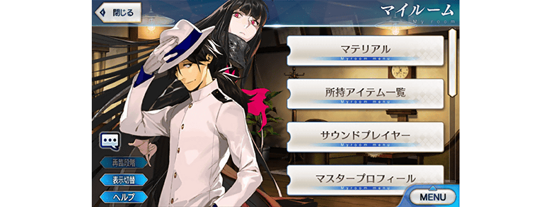
在「概念禮裝強化＆進化」畫面及「靈基變還(販賣)」畫面，設定成隊伍或支援的Servant所裝備的概念禮裝，能選擇做為強化素材、靈基變還(販賣)的對象。
至今為止裝備中的概念禮裝會以轉暗狀態顯示「隊伍使用中」，裝備的概念禮裝被限制無法選擇的設定，以後顯示「裝備中」圖示的狀態，就算裝備了還是能選擇做為強化素材和靈基變還(販賣)對象。
※挑選登錄及上鎖中的概念禮裝為對象外。
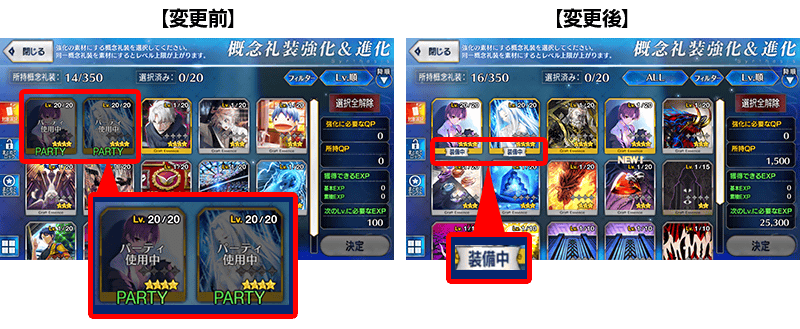
配合上述的變更，在「概念禮裝強化＆進化」畫面及「靈基變還(販賣)」畫面選擇裝備中的概念禮裝做為強化素材或靈基還(販賣)的對象的情況，會在點擊決定鍵時顯示確認的對化框訊息。
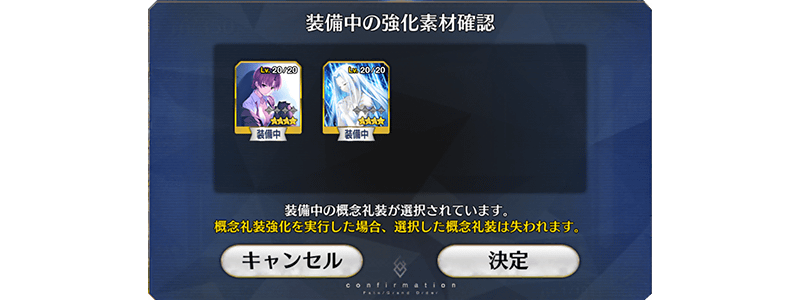
關於做為初登場Servant「沖田總司〔Alter〕」和「岡田以藏」Pick Up對象的期間限定「GUDAGUDA帝都聖杯奇譚Pick Up召喚(每日交替)」詳情請自下述橫幅確認。